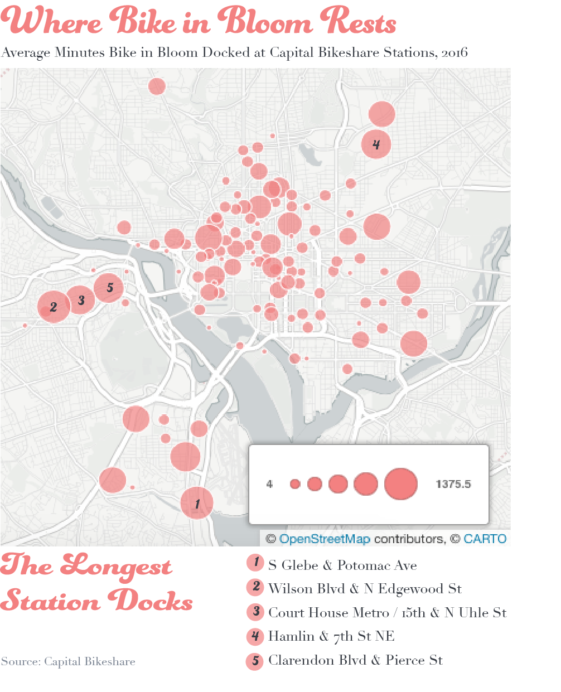

A Data-Driven Guide to Finding Bike in Bloom
Kate Rabinowitz // March 17, 2017 // as featured in Washingtonian
Despite a cold snap and and a snowstorm that will likely result in a greatly diminished peak-bloom period, the National Cherry Blossom Festival is still on. And that means it’s time for the return of one of Capital Bikeshare most popular promotions: the #BikeinBloom, in which the system adds a single pink bike to its fleet of nearly 4,000. For four weeks, the pink bike is released into the Capital Bikeshare system—which spans DC, Arlington, Alexandria, Fairfax County, and Montgomery County—for riders to find, ride, and photograph.
But spotting a single bike among the entire network sounds daunting. Looking back at the bike’s movements during 2016’s Cherry Blossom Festival might provide some insight for Capital Bikeshare users hoping to find this year’s model.
The pink bike was the most popular vehicle in Capital Bikeshare’s system for the four weeks it was available last year. In 2016, the bike was used 220 times, compared to a fleet-wide average of 77 uses in the same period. But that doesn’t mean the bike in bloom was especially well-traveled. Despite its constant ridership, the pink bike only made to just over a quarter of the nearly 400 stations Capital Bikeshare had at the time. Not surprisingly, it was parked most frequently at docks along the National Mall or other tourist destinations, as shown in the map below.

All those rentals during the festival added up to a total riding time of 3 days, 6 hours, and 17 minutes for the pink bike, though three regular bikes in the system had longer cumulative usage times over the same period. So, how do you catch the bike in bloom? The most frequent periods of downtime were late evenings and early mornings, but that doesn’t necessarily mean you should race to the Mall before dawn in hopes of grabbing the special bike.
Where the bike sat the longest were not the most visited stations, however. The bike in bloom spent less than 12 minutes on average docked at the two most popular stations, Jefferson Dr. and 14th St., Southwest, and the Lincoln Memorial. But it spent two-and-a-half days docked at Wilson Blvd. and North Edgewood St. in Clarendon. It also spent more than a day parked at South Glebe Rd. and Potomac Ave. in Crystal City, behind Union Market, and South Troy St. and 26th St. South in south Arlington. The map below shows the average docking time at each station.

If you’re serious about finding the bike in bloom keep an eye out at night beyond DC’s tourist spots. And if it ever goes missing for long stretches of time, it’s probably in Arlington. Good luck.
Technical notes: Data is available through Capital Bikeshare. You can find complete code for this post on my github page.